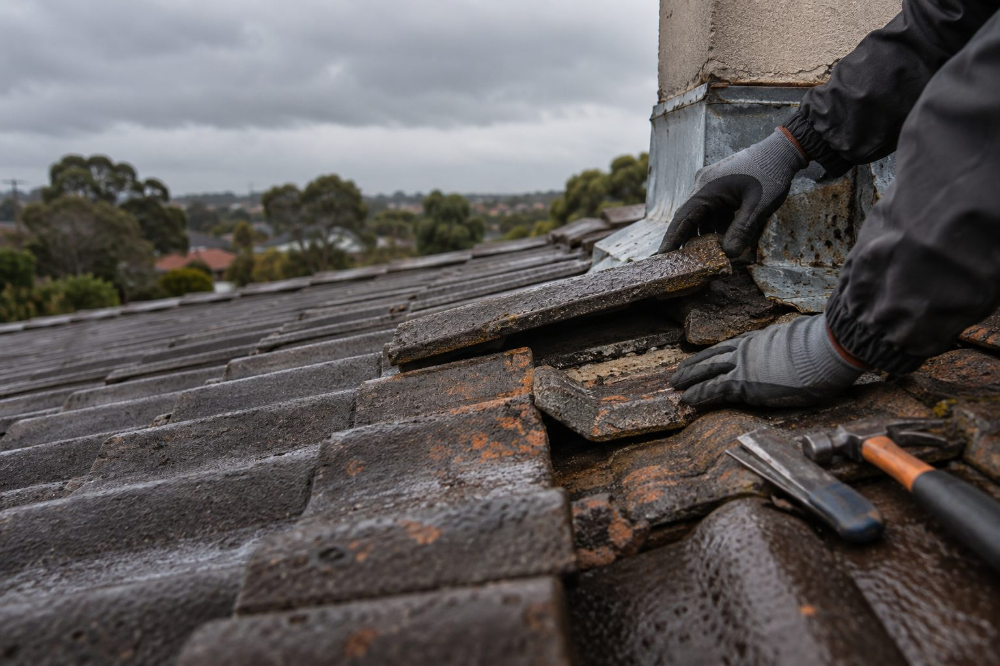

Water entry
Roof Leak Detection and Water-entry Paths
Understand roof leaks, water paths and the observations that help an inspection.
Read the roof leak detection guide ↗
Adelaide roofing advice
Search clear, practical guides on roof repairs, leaks, tiles, ridge capping, gutters and roof restoration.
Advice by symptom
Use these guides to prepare for an assessment. Observe from ground level and leave roof and ladder access to Ellis.
Record where water appears and what the weather was doing. An indoor stain can be away from its entry point.
Water entry
Understand roof leaks, water paths and the observations that help an inspection.
Read the roof leak detection guide ↗Service next step: Roof leak tracing and repairs in Adelaide.
A local defect needs its surrounding roof details checked before deciding how much work is needed.
Roof warning signs
Start with displaced materials, flashing gaps and changes after rain or wind.
Read the roof repair warning signs guide ↗Tile damage
See why fit, overlap and adjoining roof details matter to a local repair.
Read the tile roof repair guide ↗Ridge damage
Distinguish the visible pointing from the bedding that supports the caps.
Read the ridge capping and repointing guide ↗Service next step: Tile, ridge capping and roof repairs in Adelaide.
Debris removal and component repairs are different jobs. Cleaning and repairs are quoted separately.
Drainage symptoms
Separate debris build-up from damaged joints, outlets or downpipes.
Read the gutter overflow and downpipe guide ↗Service next step: Gutter cleaning and accessible flow checks or gutter and downpipe component repairs.
Start with defects and roof condition before considering a broader restoration scope.
Repair or restoration
Compare the scope and the condition it addresses before discussing finishes.
Read the repair and roof restoration guide ↗Service next step: Repair-first roof restoration in Adelaide.
Explore Adelaide roof repair and maintenance services, or follow a specific topic below.
Talk to Ellis
Tell us your suburb, what you have noticed and when it first appeared. Include roof material if known, access constraints and photographs taken safely from ground level. Ellis confirms the scope after an on-site assessment and provides a written quote.